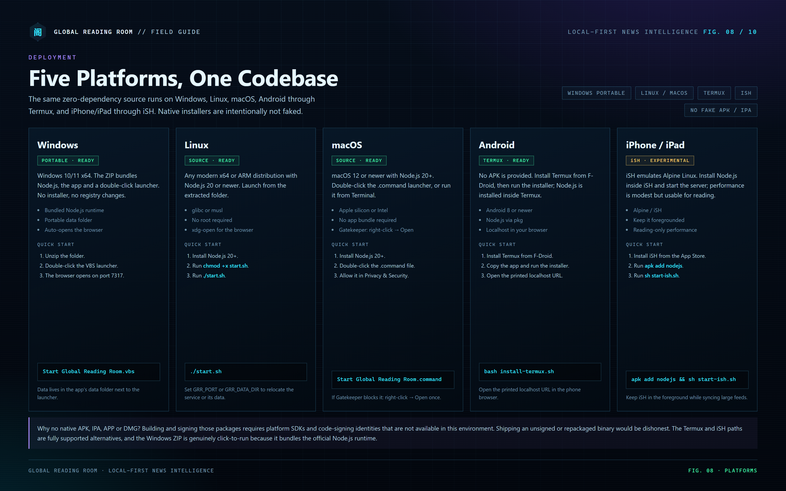
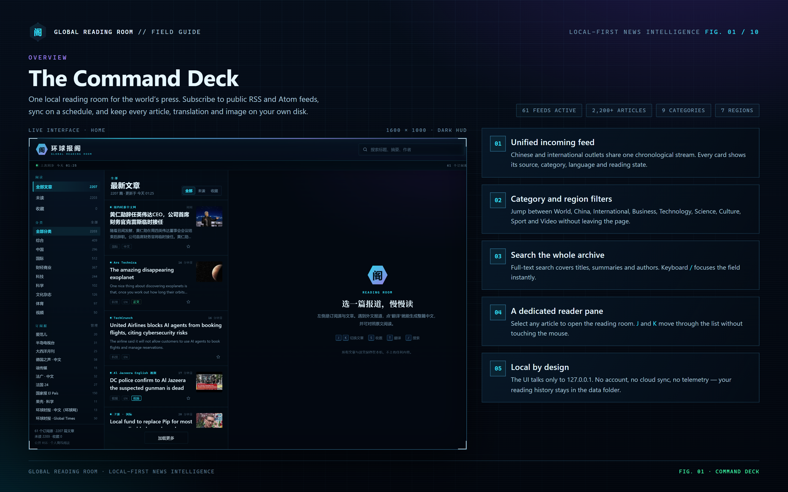
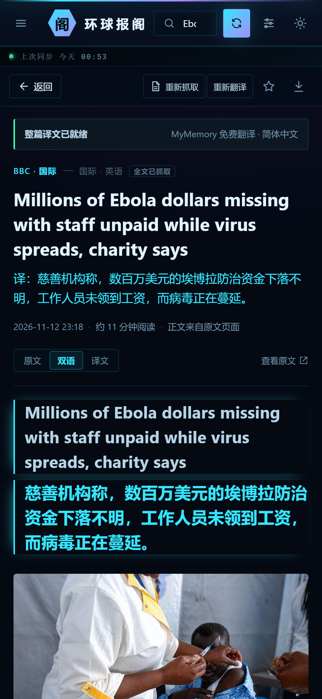
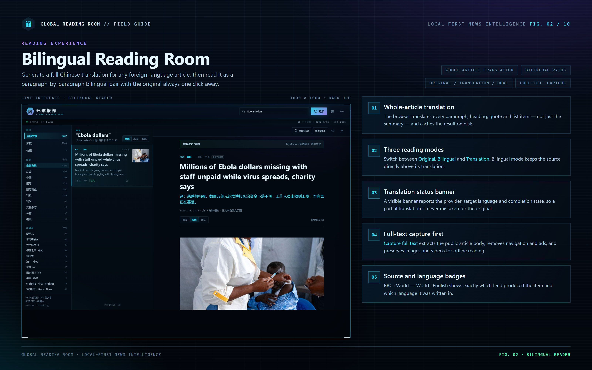
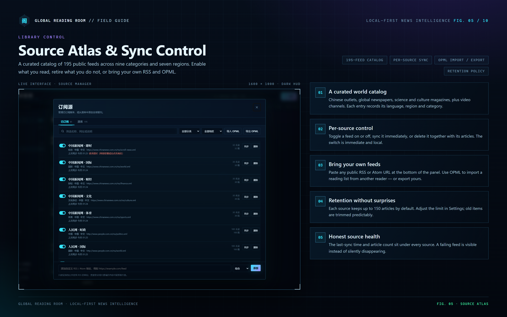
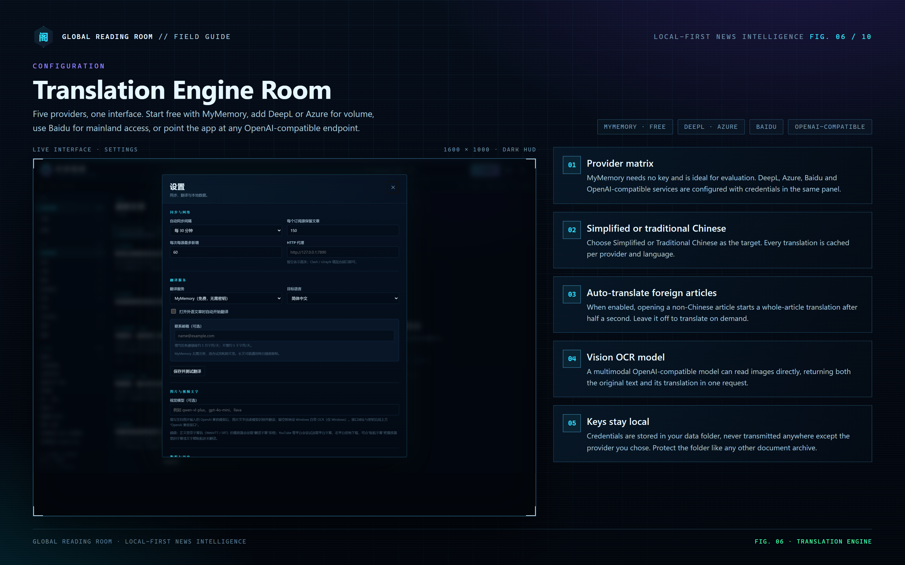
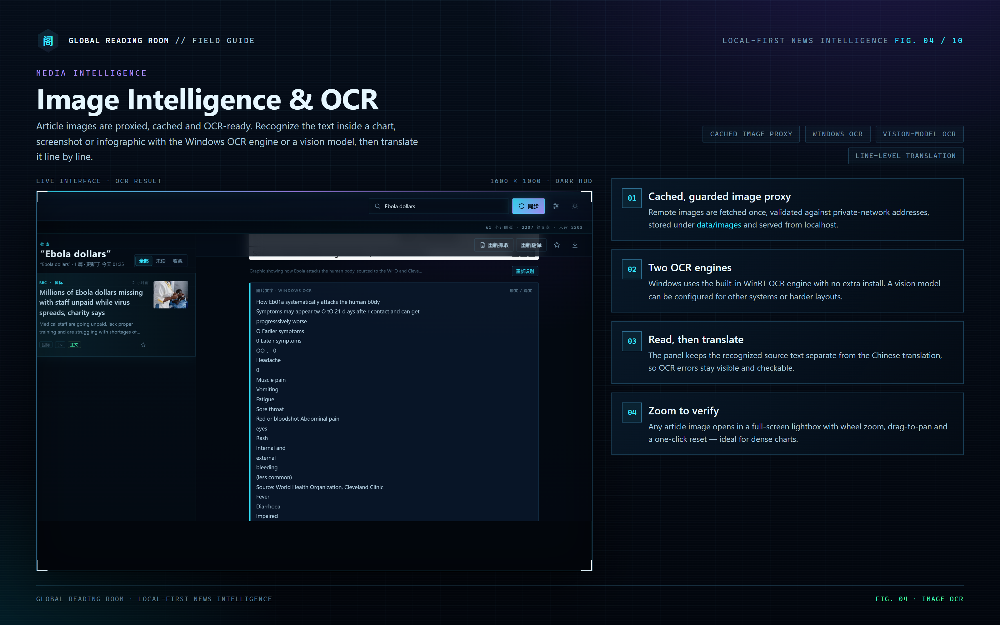
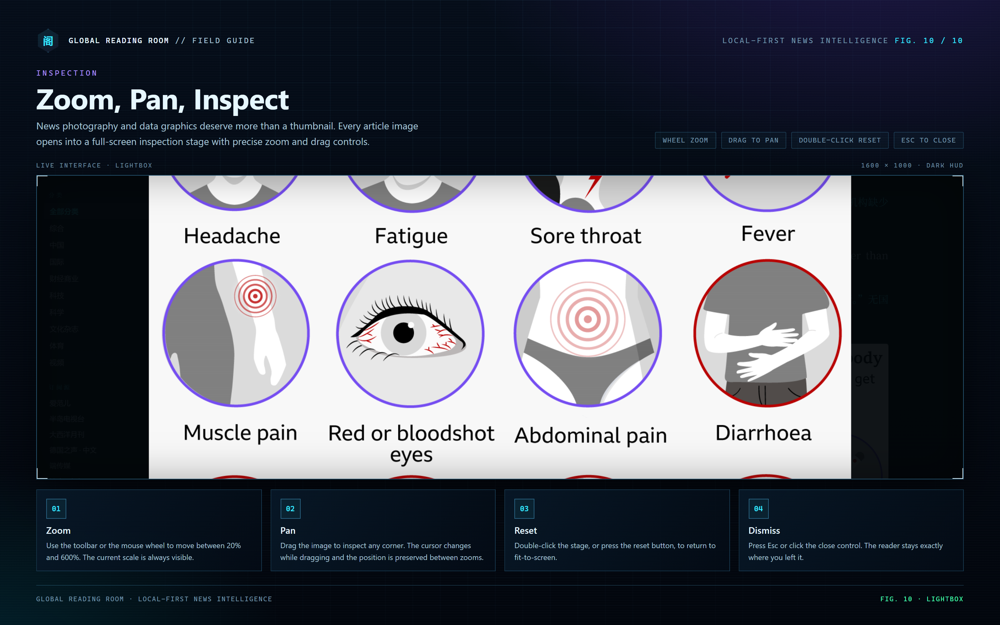
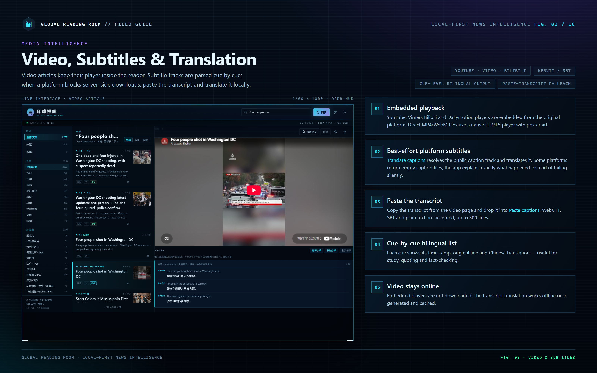
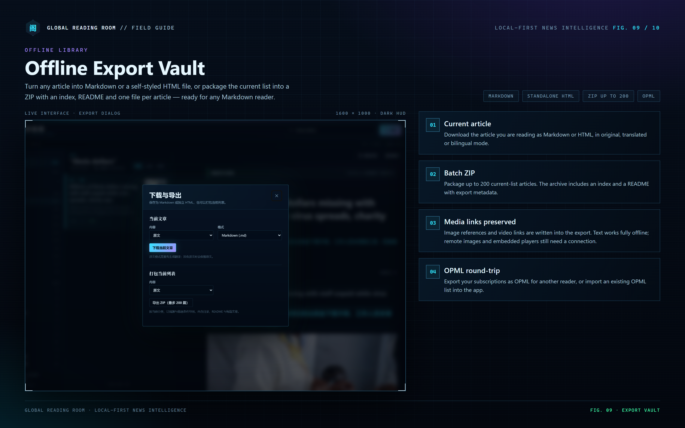

Read the world.
Keep it local.
Global Reading Room (环球报阁) is a personal news and magazine reading room that runs entirely on your machine. It collects public RSS and Atom feeds, captures public article text, translates foreign reporting into Chinese paragraph by paragraph, reads text inside images, translates video subtitles, and builds an offline library you can keep.
01 · OrientationWhat this application is — and is not
Global Reading Room is a local web application. A small Node.js process runs on your computer, serves its browser interface from 127.0.0.1, and stores every article, translation, image, OCR result and subtitle file in a folder you control. There is no account, no cloud sync and no telemetry.
It is
- A reader for public RSS / Atom feeds and publicly reachable article pages.
- A bilingual reading tool with whole-article Chinese translation and a permanent original.
- A media reader: cached images, a zoomable lightbox, OCR, embedded video and subtitle translation.
- An offline library: Markdown, standalone HTML, batch ZIP and OPML.
- A single portable folder you can copy, back up or delete.
It is not
- A paywall bypass, login-wall bypass or DRM remover.
- A downloader for YouTube, Netflix, Spotify or other streaming catalogs.
- A cloud service, a multi-user server or a publishing platform.
- A native Android APK, iOS IPA, macOS APP or Windows installer.
- A replacement for the publisher's own site, terms or copyright.
02 · Before you startRequirements and compatibility
| Platform | Minimum | Runtime | Browser | Notes |
|---|---|---|---|---|
| Windows | Windows 10 / 11 x64 | Bundled Node.js (no install) | Edge, Chrome, Firefox | Portable ZIP; data next to the launcher |
| Linux | Any modern x64 / ARM distro | Node.js 20 or newer | Any modern browser | start.sh; glibc or musl |
| macOS | macOS 12+ | Node.js 20 or newer | Safari, Chrome, Firefox | Apple silicon or Intel; .command launcher |
| Android | Android 8+ | Node.js installed inside Termux | Phone browser | F-Droid Termux; no APK |
| iPhone / iPad | iOS / iPadOS with iSH | Node.js via apk inside iSH | Safari | Experimental; emulated and slow |
Network
The app needs outbound HTTPS to publisher feeds, article pages, image CDNs and your chosen translation provider. If you use a local proxy (Clash, v2rayN, Surge, Mihomo), enter its HTTP address in 设置 → HTTP 代理, for example http://127.0.0.1:7890. Leave it empty for a direct connection.
Disk
A fresh install with 61 feeds and a full first sync typically uses tens of megabytes. Images, full text, translations and daily backups grow over time. Keep at least 1 GB free for comfortable long-term use; the retention policy trims old articles automatically.
Windows OCR
Image OCR on Windows uses the OCR engine that ships with the operating system. English and Chinese language packs are normally present on Chinese and international Windows installations. If OCR returns an empty result, install the matching language pack in Windows Settings → Time & Language.
What you do not need
- No Python, Java, .NET SDK, database server or build tools.
- No
npm install: the project has zero runtime dependencies. - No administrator rights on Windows for the portable build.
- No account on any news site.
03 · DeploymentInstalling on five platforms
All five paths run the same server.js, lib/ and public/ files. The platform packages differ only in the launcher and runtime instructions.

Windows 10 / 11 · portable ZIP
Click to runPackage: global-reading-room-1.0.0-windows-x64.zip. It contains the application, the official Node.js runtime and two launchers.
- Right-click the ZIP → Extract All… and choose a normal folder such as
C:\Global Reading Room. Do not run it from inside the ZIP preview. - Open the extracted folder. You should see
Start Global Reading Room.vbs,server.js,runtime\,public\andlib\. - Double-click Start Global Reading Room.vbs. A hidden console starts the server; your default browser opens
http://127.0.0.1:7317. - If Windows SmartScreen shows a warning for the VBS file, choose More info → Run anyway. The file is a plain launcher, not an installer.
- To see logs or errors, use Start Global Reading Room (console).cmd instead. Keep that window open while the app runs.
data\ inside the application folder. Move the whole folder to move the app; copy the whole folder to back it up. No registry entries, services or scheduled tasks are created.set GRR_PORT=7318 before starting, then open http://127.0.0.1:7318.The VBS launcher starts the bundled runtime\node.exe. If the runtime folder is missing, it falls back to a system node on PATH.
Linux
Source readyPackage: global-reading-room-1.0.0-linux.tar.gz. Requires Node.js 20+ from your distribution, NodeSource, nvm or a similar source.
tar -xzf global-reading-room-1.0.0-linux.tar.gz
cd global-reading-room-1.0.0
chmod +x start.sh
./start.shstart.sh changes to its own folder, starts server.js and lets the server open your browser. On a headless server or a minimal window manager, use:
./start.sh --no-open
# then open the printed http://127.0.0.1:7317 URL from another machine
# or tunnel it: ssh -L 7317:127.0.0.1:7317 user@hostmacOS 12+
Source readyPackage: global-reading-room-1.0.0-macos.tar.gz. Install Node.js first, for example with Homebrew:
brew install node
tar -xzf global-reading-room-1.0.0-macos.tar.gz
cd global-reading-room-1.0.0Double-click Start Global Reading Room.command. The first time, macOS Gatekeeper may block it: right-click the file → Open → Open again. You can also run ./start-mac.sh from Terminal.
Apple silicon and Intel are both supported because the app itself is architecture-neutral JavaScript. The launcher uses the system Node.js you installed.
http://127.0.0.1:7317 manually. The terminal window must stay open; closing it stops the server.Android · Termux
Termux readyPackage: global-reading-room-1.0.0-termux.zip. There is no APK. Termux provides a real Linux userland and runs the same Node.js source.
- Install Termux from F-Droid (recommended) or the Termux GitHub releases. The Play Store build is outdated and not recommended.
- Copy the ZIP to the phone, then in Termux run
termux-setup-storageonce if you want to unzip from Downloads. - Unzip and run the installer:
unzip global-reading-room-1.0.0-termux.zip -d global-reading-room cd global-reading-room bash install-termux.sh - The installer runs
pkg update, installsnodejs, then starts the server. Open the printedhttp://127.0.0.1:7317address in your phone browser. - Keep Termux alive while syncing. Android may freeze background apps; use the Termux notification’s Acquire wakelock option for long syncs.
iPhone / iPad · iSH
ExperimentalPackage: global-reading-room-1.0.0-ish.zip. iSH emulates an Alpine Linux environment inside iOS. It is usable for reading but slow for bulk syncing.
apk add nodejs unzip
unzip global-reading-room-1.0.0-ish.zip -d global-reading-room
cd global-reading-room
sh start-ish.shOpen the printed localhost URL in Safari. Keep iSH in the foreground while the first sync runs. If the app cannot open Safari automatically, copy the URL manually; iSH has no xdg-open.
04 · First contactThe first five minutes
When the server starts for the first time it creates the data folder, seeds the default source list (61 enabled feeds), and begins a sync after about one second. The interface appears immediately; the article list fills as feeds arrive.
- Watch the sync strip. It shows the current source, a progress bar and a final summary such as “60 ok · 1 failed · 106 new”. A failure is named with its reason; it is not hidden.
- Open the first article. Click any card. The reader pane loads the RSS summary or the cached full text.
- Fetch the full text. If the article says “RSS 只提供了摘要”, click 抓取全文 at the top right of the reader. Public article text and media are extracted.
- Translate. Click 翻译 (or press T). The whole article is translated paragraph by paragraph. The first run uses MyMemory, which needs no key.
- Choose a reading mode. Use 原文 / 双语 / 译文 above the article. The choice is remembered for the session.
- Open Settings. Pick a provider, set a proxy if needed, and decide whether foreign articles should translate automatically.
- Open Sources. Review the 61 active feeds, enable more from the 195-feed catalog, or import an OPML file from another reader.
Ebola dollars, open the BBC article, click 抓取全文, translate it, switch to 双语, click the infographic and run OCR, then export the article as bilingual Markdown. That exercises the entire pipeline.05 · InterfaceThree panes, one reading room

Left rail
The sidebar has three blocks: 阅读 (all, unread, starred), 分类 (nine categories) and 订阅源 (per-source filters, with a 管理 button that opens the source manager). At the bottom you see total articles, unread and starred counts.
Center list
Cards are ordered by publication time. Each card shows source, category, title, summary, language badges and read state. 全部 / 未读 / 收藏 above the list filter the current view. 加载更多 fetches the next page.
Right reader
The reader shows the selected article. Its toolbar offers 抓取全文, 翻译, 收藏 and 下载与导出. The article header carries source, language, category, publication time and a link to the original page.
Mobile layout
Below 880 px the layout becomes a single pane. The sidebar opens as a drawer, the article list fills the screen, and selecting an article opens the reader with a 返回 button. The interface was tested at 430 × 932 (phone portrait).

06 · ReadingSearch, filter, navigate, remember

Search
The search field filters the entire local archive by title, summary, author and source. Press / from anywhere to focus it. Results update as you type; Esc clears the field and returns to the full list.
Views and filters
- 全部 shows every retained article.
- 未读 hides articles you have opened. Opening an article marks it read automatically.
- 收藏 shows starred articles. Star from the card or with S.
- 分类 filters by the nine catalog categories: 综合, 中国, 国际, 财经商业, 科技, 科学, 文化杂志, 体育, 视频.
- 订阅源 filters by one feed. The source list shows the last sync time and article count.
Keyboard
What is stored
Read state, starred state, full text, translations, OCR results and subtitles persist in the data folder. Clearing the browser cache does not lose them. The app does not use cookies for identity and has no login.
07 · SourcesThe source atlas and sync engine

Subscribed vs. catalog
The 已订阅 tab lists the feeds you currently read. The 源库 tab contains all 195 catalog entries. A fresh install enables 61 of them. Enabling a catalog entry adds it and syncs it; disabling keeps the source but stops future syncs.
Per-source controls
- 开关 — enable or disable the feed immediately.
- 同步 — fetch this one source now.
- 删除 — remove the feed and its articles. This cannot be undone; export or star anything you want to keep first.
- Last sync — the relative time since the last successful sync and the retained article count.
Adding a custom feed
Paste a public RSS or Atom URL at the bottom of the panel, choose a category, and click 添加. The app validates the URL, fetches the feed, derives a title and starts a sync. Private-network URLs are refused.
https://example.com/feed.xml
https://example.org/atom.xml
https://example.net/rssOPML
导出 OPML writes a standard reading list you can import into another RSS reader. 导入 OPML accepts an OPML file, adds each feed that is not already present, and keeps the original titles and groups where possible. Duplicate URLs are skipped by normalized feed key.
How sync works
- The scheduler checks every minute; a full sync runs when the configured interval has elapsed.
- Each source is fetched with a conditional request where the publisher supports it.
- New items are parsed, normalized, deduplicated by stable ID and inserted into the local index.
- Old items beyond the per-source retention limit are trimmed, preserving starred and full-text articles.
- A summary records success, failure and new-item counts; a failing source is named with its error.
- Daily backups are written to
data/backups/; the newest seven are kept.
Sync errors
| Message | Meaning | Action |
|---|---|---|
| 请求超时 | The publisher did not answer before the timeout. | Retry the source; try a proxy if the site is slow from your network. |
| HTTP 403 / 401 | The publisher blocks the request or requires a login. | The feed is not usable anonymously; disable it. |
| HTTP 404 | The feed URL has moved or retired. | Find the current official feed and add it as a custom source. |
| 不是有效的 RSS/Atom | The URL returned HTML, JSON or an error page. | Verify the URL in a browser; use the publisher's real feed. |
| 内容为空 | The feed is valid but has no items. | Wait for the publisher to update, or remove the source. |
08 · Full textFrom headline to complete article
RSS often carries only a summary. 抓取全文 requests the public article page, extracts the main body, removes navigation, ads and scripts, and stores the result under data/fulltext/. The reader then offers whole-article translation and richer export.
What is extracted
- Headings, paragraphs, quotes and lists, in reading order.
- Article images, rewritten through the local image proxy and cached.
- Video embeds and direct media URLs, when the page exposes them.
- Title and byline metadata where available.
What happens to scripts
The extractor never executes page JavaScript. It parses HTML, strips scripts, event handlers and dangerous markup, and renders only a safe subset. That is why the reader works offline and why the page cannot run code in your app.
When extraction fails
Hard paywalls, login walls, JavaScript-only article bodies, cookie consent interstitials and anti-bot challenges can defeat extraction. The app reports the failure honestly and keeps the 查看原文 link. It does not attempt to defeat the protection.
09 · TranslationThe engine room

Five providers
| Provider | Credentials | Free allowance (as shown in the app) | Best for |
|---|---|---|---|
| MyMemory | None; optional contact email | ≈5,000 chars/day without email; ≈50,000 chars/day with email | Evaluation, short articles, zero setup |
| DeepL | API key; free keys end in :fx | DeepL API Free ≈500,000 chars/month | Natural news prose |
| Azure Translator | Key + region | Free tier ≈2,000,000 chars/month | Volume and predictable quotas |
| Baidu | APPID + secret key | Depends on the account | Mainland network conditions |
| OpenAI-compatible | Base URL, key, model | Depends on the service | DeepSeek, Qwen, Moonshot, local Ollama |
Configuring MyMemory
Select MyMemory（免费，无需密钥）, optionally enter a contact email, and click 保存并测试翻译. No registration is required. Long articles can hit the daily character allowance; the app reports the provider error and keeps already-cached paragraphs.
Configuring DeepL
- Create a DeepL API account and copy the authentication key.
- Paste the key into DeepL 密钥.
- Click 保存并测试翻译. Keys ending in
:fxautomatically use the free endpoint; other keys use the paid endpoint.
Configuring Azure
- Create a Translator resource in the Azure portal.
- Copy Key and Region (for example
eastasia). - Paste both into the Azure fields. A multi-service resource usually requires the region; a single-service resource may accept it blank, but filling it is safer.
- Save and test.
Configuring Baidu
- Open the Baidu Translate open platform and create a developer account.
- Enable 通用文本翻译 (general text translation).
- Copy the APPID and the secret key into the two fields.
- Save and test. A quota or permission error is reported with the provider message.
Configuring an OpenAI-compatible endpoint
Any service that implements POST /chat/completions can translate. Enter the base URL up to /v1; the app appends /chat/completions.
Base URL https://api.deepseek.com/v1
Model deepseek-chat
Key sk-...
Base URL http://127.0.0.1:11434/v1
Model qwen2.5:7b
Key (leave empty for Ollama)Preset buttons fill DeepSeek, Qwen, Moonshot and local Ollama addresses. The same base URL and key are reused by the vision OCR model if you configure one.
Target language and modes
Choose 简体中文 or 繁體中文. Translations are cached separately per language and provider. In the reader, three modes are available once a translation exists:
- 原文 — the original article only.
- 双语 — each source paragraph above its Chinese translation, with a cyan rule marking the translation.
- 译文 — Chinese only. The original remains one click away.
Automatic translation
Enable 打开外语文章时自动开始翻译 to translate a non-Chinese article shortly after it opens. Chinese articles are skipped. Leave it off to conserve quota; press T when you want a translation.
Caching and re-translation
Each paragraph is translated once per provider, language and article. Cached paragraphs are reused across sessions. 重新翻译 forces a new pass; 本段重译 and re-fetching the full text also invalidate the relevant cache. The banner reports the provider, target language and completion state.
10 · ImagesCache, OCR, zoom and inspect

Image proxy and cache
Article images are fetched through the local server, validated against private-network addresses, stored under data/images/ and served from localhost. A cached image does not re-download on every open, and the publisher's tracking parameters do not leak into the reader. If an image disappears upstream, the cached copy remains until you delete the data folder.
OCR on Windows
- Open an article with figures and click 识别图中文字 under an image.
- The server calls the Windows built-in OCR engine through PowerShell, using the installed OCR language packs.
- The panel shows the raw recognized text and the Chinese translation line by line. The source and translation are deliberately separate so OCR errors remain visible.
- Click 重新识别 to retry after changing the model or language pack.
Windows OCR is local and free. It works best on clean screenshots, document scans and high-contrast infographics; stylized posters and tiny text can produce errors.
OCR with a vision model
On Linux, macOS, Termux, iSH, or for harder layouts on Windows, configure a multimodal OpenAI-compatible model in 设置 → 视觉模型（可选）. The model receives the image and returns both the source text and its translation. Use a model that accepts image input; the base URL and key are the same as the OpenAI-compatible translation fields.
Lightbox controls

- Click any article image to open the full-screen stage.
- Use the toolbar buttons or the mouse wheel to zoom between 20 % and 600 %.
- Drag the image to pan; the cursor changes while dragging.
- Double-click the stage, or press the reset button, to return to fit-to-screen.
- Press Esc or click the close control to return to the reader without losing position.
11 · VideoPlayers, subtitles and the paste fallback

Supported players
YouTube, Vimeo, Bilibili and Dailymotion articles keep their original embedded player. Direct MP4, WebM, OGV and MOV files use the native HTML5 player with poster art where available. Embedded players are never downloaded; the video stays on the platform and respects its own terms.
Translating a subtitle track
- Open a video article. The media section appears above the article body.
- Click 翻译字幕 if the app found a caption track.
- The server fetches the public WebVTT or SRT track, parses it cue by cue, translates the cues in batches, and caches the result.
- Each cue shows its timestamp, original line and Chinese translation.
Why YouTube sometimes fails
YouTube frequently refuses server-side caption downloads or returns an empty caption file. The app reports exactly what happened instead of failing silently. Use the supported fallback:
- Open the video on YouTube, open the transcript or captions panel, and copy the text.
- Back in the article, click 粘贴字幕.
- Paste WebVTT, SRT or plain text (up to 300 lines) and click 翻译粘贴内容.
- The app translates and caches the cues locally; no further platform request is needed.
Video files are not saved into the data folder. Only the transcript and its translation are cached.
12 · Offline libraryMarkdown, HTML, ZIP and OPML

Current article
Click the download icon in the reader toolbar. Choose:
- 内容: 原文, 双语对照 or 译文.
- 格式: Markdown (
.md) or standalone HTML (.html).
The HTML export includes inline styling and is readable without the app. The Markdown export is suitable for Obsidian, Logseq, Typora and similar tools. Image references and video links are preserved; text works offline, while remote images and embedded players still need a connection.
Batch ZIP
Choose 打包当前列表, pick a content mode, and export up to 200 articles from the current list. The archive contains one file per article, an index and a README with export metadata. Batch export respects the current filter and search, so you can build a category-specific or source-specific library.
OPML
Export your subscriptions as OPML for another reader, or import an existing OPML list. Import is additive and deduplicates by normalized feed URL. It does not delete existing feeds.
13 · ReferenceEvery setting, explained
| Setting | Default | What it does | Recommended |
|---|---|---|---|
| 自动同步间隔 | 30 minutes | Runs a full sync at the chosen interval. “关闭自动同步” disables the scheduler; manual sync still works. | 30–60 min for daily reading |
| 每个订阅源保留文章 | 150 | Maximum retained articles per source (20–2000). Starred and full-text items are preserved. | 150 for desktop, 60 for Termux/iSH |
| 每次每源最多新增 | 60 | New items accepted from one source in a single sync (10–200). | 60; lower on slow devices |
| HTTP 代理 | empty | HTTP proxy for feeds, articles, images and translation requests. Empty means direct. | http://127.0.0.1:7890 for Clash |
| 翻译服务 | MyMemory | Active provider. Credentials are per provider. | MyMemory to start; DeepL/Azure for volume |
| 目标语言 | 简体中文 | Simplified or traditional Chinese. Cache is per language. | 简体中文 |
| 自动翻译 | off | Translate a non-Chinese article shortly after opening. | Off to save quota; on for a reading session |
| MyMemory 邮箱 | empty | Optional contact email; raises the free allowance as shown in the app. | Fill it if you use MyMemory often |
| DeepL 密钥 | empty | Authentication key; :fx keys use the free endpoint. | Use a free key for evaluation |
| Azure 密钥/区域 | empty | Translator key and resource region. | Fill both |
| 百度 APPID/密钥 | empty | Baidu Translate credentials. | Enable general text translation first |
| OpenAI 接口/密钥/模型 | DeepSeek, empty, deepseek-chat | Any OpenAI-compatible chat endpoint. | Use a model with enough context |
| 视觉模型 | empty | Multimodal model for OCR on any platform. Uses the OpenAI base URL/key. | Set on non-Windows systems |
14 · DataThe folder that is the whole application
data/
├─ db.json sources, article index, settings, read/star state
├─ db.json.bak previous good copy
├─ backups/
│ └─ db-YYYY-MM-DD.json seven rotating daily backups
├─ fulltext/
│ └─ <article-id>.json extracted body and media
├─ translations/
│ └─ <id>.<provider>.<lang>.json
├─ images/ cached article images
├─ ocr/
│ └─ <hash>.json recognized text and translation
└─ captions/
└─ <hash>.json parsed and translated cuesAtomic writes and recovery
db.json is written through a temporary file and an atomic rename. A previous copy is kept as db.json.bak. If the main file is unreadable at startup, the app tries the backup and quarantines the broken file in backups/. Daily snapshots are kept for seven days.
Backup
- Use 设置 → 退出程序 (or Ctrl+C in the console) to stop the server.
- Copy the entire
datafolder to another disk. - To restore, replace the folder while the app is stopped and start again.
Migration
Windows: copy the whole application folder, including runtime\ and data\. Linux/macOS: copy the app folder and set GRR_DATA_DIR if the data lives elsewhere. The JSON store is portable across platforms; paths inside are relative, not machine-specific.
Reset
Stop the app, delete the data folder, and start again. A fresh database and the 61 default sources are created. This is irreversible; export anything you want first.
db.json while the app is running. The in-memory state will overwrite your edit. Stop the server, make a copy, then edit.15 · Trust boundarySecurity and privacy model
Network
- Binds to
127.0.0.1only. - Validates the
HostandOriginheaders against localhost names. - Rejects non-local hosts with HTTP 403.
- No UPnP, no port forwarding, no tunnel.
Browser
- Content-Security-Policy: scripts are same-origin only; frames are limited to known video hosts.
X-Frame-Options: DENYandframe-ancestors 'none'.X-Content-Type-Options: nosniff, referrer policyno-referrer.- Static serving is allow-listed; traversal is rejected.
Outbound fetches
- Image and caption fetches resolve DNS and refuse loopback, link-local and private ranges.
- Response sizes are capped; timeouts are enforced.
- Redirects are followed only to public targets.
- No page JavaScript is executed during extraction.
Secrets
- Provider keys live in
data/db.jsonin plain text, protected by filesystem permissions. - Keys are sent only to the provider you configured.
- No telemetry, analytics, crash reporting or remote logging.
- Protect the data folder like a document archive.
Threat model
The app is designed for a single user on a personal computer. It is not hardened for hostile local users, shared hosting, public exposure or untrusted extensions. A malicious feed can still serve malicious article text; extraction sanitizes markup, but you should treat the web as untrusted. If you need multi-user access or remote access, this is the wrong tool.
Proxy trust
If you configure an HTTP proxy, the proxy sees the outbound requests, including feed URLs and translation payloads. Use a proxy you trust. The app does not bypass TLS verification.
16 · AutomationThe local HTTP API
Every UI action is backed by a local JSON endpoint. You can script exports, trigger a sync or integrate the archive with another tool. All endpoints are under http://127.0.0.1:7317/api and inherit the localhost-only policy.
Health and state
curl http://127.0.0.1:7317/api/health
curl http://127.0.0.1:7317/api/state
curl "http://127.0.0.1:7317/api/articles?view=unread&category=%E5%9B%BD%E9%99%85&limit=20"Sync and jobs
# start a full sync
curl -X POST http://127.0.0.1:7317/api/sync -H "Content-Type: application/json" -d "{}"
# start one source
curl -X POST http://127.0.0.1:7317/api/sync -H "Content-Type: application/json" -d "{\"sourceId\":\"SOURCE_ID\"}"
# poll the job
curl http://127.0.0.1:7317/api/jobs/JOB_IDFull text and translation
curl -X POST http://127.0.0.1:7317/api/articles/ARTICLE_ID/fulltext
curl -X POST http://127.0.0.1:7317/api/articles/ARTICLE_ID/translate \
-H "Content-Type: application/json" \
-d "{\"provider\":\"mymemory\",\"lang\":\"zh-CN\"}"
curl "http://127.0.0.1:7317/api/articles/ARTICLE_ID/translation?provider=mymemory&lang=zh-CN"Downloads and exports
curl -OJ "http://127.0.0.1:7317/api/articles/ARTICLE_ID/download?format=md&mode=bilingual"
curl -OJ "http://127.0.0.1:7317/api/opml"
curl -X POST http://127.0.0.1:7317/api/export \
-H "Content-Type: application/json" \
-d "{\"mode\":\"bilingual\",\"filter\":{\"view\":\"unread\"}}" \
-o reading-room.zipOCR and captions
curl -X POST http://127.0.0.1:7317/api/ocr \
-H "Content-Type: application/json" \
-d "{\"url\":\"https://example.com/chart.png\"}"
curl -X POST http://127.0.0.1:7317/api/captions \
-H "Content-Type: application/json" \
-d "{\"url\":\"https://example.com/subtitles.vtt\"}"Shutdown
curl -X POST http://127.0.0.1:7317/api/shutdown202 with a job object. Poll /api/jobs/:id until status is done, failed or canceled. The UI does the same polling internally.17 · RecoveryTroubleshooting matrix
| Symptom | Likely cause | Fix |
|---|---|---|
| Browser does not open | No default browser, headless session, or blocked launcher | Open http://127.0.0.1:7317 manually; run with --no-open on headless systems. |
| “端口 7317 已被占用” | Another copy is already running | Use the existing window or set GRR_PORT=7318 before starting. |
| Blank white page | Stale JS/CSS or the server stopped | Hard-refresh (Ctrl+F5), check the console window, restart the app. |
| Feed always times out | Publisher slow or blocked from your network | Retry; set the proxy; in Termux keep the wakelock; disable the feed if it is dead. |
| Article shows only a summary | The feed is summary-only | Click 抓取全文; if extraction fails, the publisher blocks anonymous readers. |
| Translation stops mid-article | Provider quota, rate limit or network | Check the banner; wait or switch provider; click 重新翻译 to resume with cached paragraphs. |
| MyMemory “quota exceeded” | Daily character limit | Add a contact email, wait until the next day, or configure DeepL/Azure/Baidu. |
| DeepL 403 | Wrong key type or endpoint | Free keys must end in :fx; check the key and plan. |
| Azure 401 | Missing or wrong region | Fill the exact resource region, for example eastasia. |
| Baidu error 54003 | Rate limit or permission | Check quota, enable general text translation, and retry later. |
| OpenAI 404 | Base URL includes the wrong path | Enter the base up to /v1 only; the app appends /chat/completions. |
| OCR returns nothing | No language pack or low-resolution image | Install the Windows OCR language pack or configure a vision model; use a larger image. |
| No “翻译字幕” button | No public caption track was found | Use 粘贴字幕 and paste the transcript from the video page. |
| YouTube caption download refused | Platform blocks server-side access | This is expected; use the paste-transcript fallback. |
| Batch ZIP cannot be created | Too many articles or a broken article | Reduce the selection to 200 or fewer; retry after a sync. |
| Data seems corrupted | Interrupted write or manual edit | Stop the app; restore db.json.bak or the latest backups/db-YYYY-MM-DD.json. |
| Termux stops in background | Android battery optimization | Acquire the Termux wakelock; disable battery optimization for Termux. |
| iSH is very slow | CPU emulation | Reduce enabled sources and retention; sync in small batches. |
| macOS blocks the launcher | Gatekeeper quarantine | Right-click → Open once; or run ./start-mac.sh. |
| Windows SmartScreen warns | Unsigned VBS launcher | More info → Run anyway; the file is a plain launcher. |
Reading the console
On Windows, use the console launcher to see startup and sync logs. The server prints the URL, the data directory, a shutdown hint and any fatal startup error. On Linux/macOS/Termux/iSH, the terminal shows the same output. If the app exits immediately, the usual causes are a missing Node.js runtime or an occupied port.
18 · BoundaryLegal, copyright and honest limitations
What the software reads
Global Reading Room reads public RSS/Atom feeds and publicly accessible article pages. It sends ordinary HTTP requests, respects the publisher's response, and does not defeat authentication, paywalls, DRM, CAPTCHAs or anti-bot systems.
What you may do with the output
- Read articles and translations for personal study and research.
- Keep an offline copy for your own use.
- Quote short passages with attribution under applicable law.
What you may not do
- Republish, resell or redistribute downloaded articles, images or translations.
- Remove copyright notices or present the reporting as your own.
- Use the software to scrape at scale, evade access controls or overload publishers.
Copyright
All article text, photography, video and audio remain the property of the original publishers and authors. The software claims no ownership over fetched content. The catalog lists public feeds; if you are a rights holder and want a feed removed, remove it from your local catalog or contact the maintainer of the distribution you received.
No warranty
The software is provided as-is, without warranty of any kind. Feed formats change, publishers block clients, and translation providers change quotas. You are responsible for complying with the laws and terms that apply to you.
Third-party runtime
The Windows portable package includes the official Node.js runtime. Node.js is distributed under its own license, included in runtime/NODE-LICENSE.txt. No other third-party libraries are bundled.
19 · AnswersFrequently asked questions
Is it really free?
The application is free to run and has no subscription. Translation providers may have their own free tiers and quotas. MyMemory needs no key; DeepL, Azure and Baidu have free allowances; OpenAI-compatible services bill according to their own terms.
Does it work offline?
Reading, browsing, translation review, OCR review and exports work offline once the content is cached. Syncing new articles, fetching uncached images, translating new text and streaming embedded video need a connection.
Where is my reading history?
In data/db.json and the related folders. Nothing is sent to a server. Copy the folder to migrate; delete it to reset.
Why is the catalog 195 but only 61 active?
A fresh install seeds a balanced set of 61 feeds so the first sync is quick and the interface is not overwhelming. The other entries are one toggle away in 订阅源 → 源库.
Why do some Chinese sources use Bing News?
Several Chinese outlets no longer publish a working official RSS feed. Bing News public RSS provides discovery, and the app unwraps each item to the publisher's direct article URL. The source note states this. If an official feed returns, add it as a custom source.
Can you add Zhihu, Xiaohongshu or Douyin?
Not without login, private APIs or anti-bot bypass. This project does not do that. If those platforms publish a public RSS endpoint in the future, it can be added as a custom source.
Why no APK or IPA?
Building and signing native packages requires platform SDKs and signing identities that are not available here. The Termux and iSH paths run the same source and are fully documented. A fake or unsigned binary would be worse than an honest alternative.
Can I expose it to my phone on the same Wi-Fi?
The server binds to loopback, so it is not reachable from another device by default. Use an SSH tunnel or a trusted local reverse proxy if you understand the risk; do not expose it to the public internet.
Can I run two instances?
Yes, with different ports and different data folders: GRR_PORT=7318 GRR_DATA_DIR=/path/to/other-data node server.js. The launcher detects an existing instance on port 7317 and opens it instead of starting a duplicate.
How do I update?
Stop the app, replace the program files with the new version, keep your data folder, and start again. Back up the data folder first. The JSON store is designed to survive upgrades; newer versions may add fields.
Why does translation sometimes mix languages?
Translation is per paragraph and the provider returns the target language. Mixed source languages, names and quoted terms can remain in the original. The bilingual mode keeps the source visible so you can check.
Can I translate an image without OCR?
The lightbox is for inspection only. Text inside an image requires OCR: Windows built-in OCR, or a configured vision model. The OCR panel then translates the recognized lines.
Are images stored forever?
Images are cached under data/images/. They are not deleted by article retention automatically; clear the cache by deleting the folder while the app is stopped if disk use matters.
20 · AppendicesShort references
A · Keyboard shortcuts
| Key | Action | Scope |
|---|---|---|
| J | Next article | Reader |
| K | Previous article | Reader |
| S | Star / unstar current article | Reader |
| T | Translate / re-translate current article | Reader |
| / | Focus search | Global |
| Esc | Close modal / lightbox / drawer, clear search, or go back | Contextual |
B · Environment variables
| Variable | Default | Purpose |
|---|---|---|
GRR_PORT | 7317 | HTTP port. Falls back to PORT. |
GRR_DATA_DIR | ./data | Data folder. Absolute or relative to the app. |
GRR_NO_OPEN | unset | Set to 1 to skip auto-opening the browser. |
HTTP_PROXY / HTTPS_PROXY | unset | Optional fallback proxy when no proxy is set in Settings. |
C · Daily workflow checklist
- Morning: let the scheduled sync run, skim 未读, star what matters.
- Deep read: open a foreign article, fetch the full text, translate, switch to 双语.
- Research: search a topic, export the current list as a ZIP for the day.
- Media: OCR a chart, translate a subtitle track or paste a transcript.
- Evening: star long reads; export anything you want to keep outside the app.
- Weekly: verify the backup folder, trim unused sources, check disk use.
D · Quick reference card
Start
Windows: double-click VBS.
Linux/macOS: ./start.sh.
Termux/iSH: run the installer or sh start-ish.sh.
Stop
Settings → 退出程序, or Ctrl+C in the console. The data is flushed before exit.
Address
http://127.0.0.1:7317
Localhost only. No account. No telemetry.
Backup
Stop the app, copy the entire data folder. Restore by replacing it while stopped.